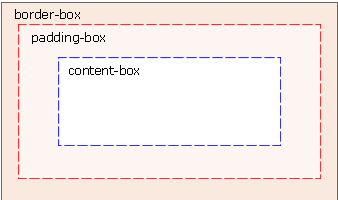

body {
background:url(/img.gif);
background-size:63px 100px;
-moz-background-size:63px 100px; /* 老版本的 Firefox */
background-repeat:no-repeat;
}
div
{
background:url(bg_flower.gif);
-moz-background-size:40% 100%; /* 老版本的 Firefox */
background-size:40% 100%;
background-repeat:no-repeat;
}
多个背景图片：
body {
background-image:url(bg_flower.gif),url(bg_flower_2.gif);
}
div {
background:url(bg_flower.gif);
background-repeat:no-repeat;
background-size:100% 100%;
-webkit-background-origin:content-box; /* Safari */
background-origin:content-box/padding-box/boeder-boxs;/* 指定位置*/
}
